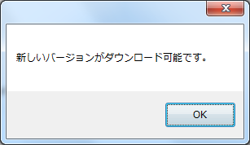
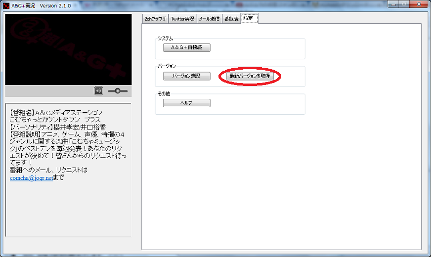
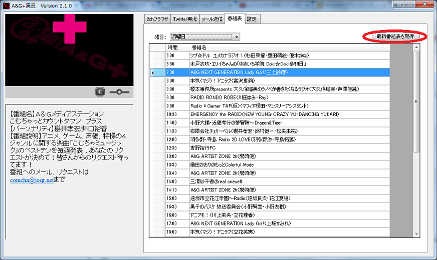

アプリの更新について
アプリ起動時に新しいバージョンがある場合はメッセージが出現します。
1.メッセージが出たら、新しいアプリのバージョンがリリースされています。

2.画面より設定タブを選択し、「最新バージョンを取得」をクリックします

番組表の更新について
番組表の更新は手動にてダウンロードすることで行うことができます。
1.画面より設定タブを選択し、「最新番組表を取得」をクリックします

なお、四半期ごとの番組改編には即時対応していない場合があります。
ご了承ください。
（番組表の内容が間違っている場合、当方の連絡先までご連絡いただければ幸いです。）